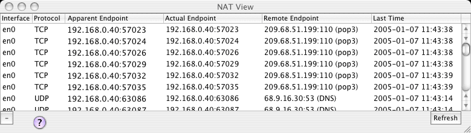

NAT View

The NAT View window allows you to view the Network Address Translation table in action to see how packets are being translated from Actual (private) to Apparent (public) endpoints. The table can be used both to verify NAT operation and debug suspected conflicts. The table is normally updated as new NAT entries are created or aged out. You can force the table to update by pressing the Refresh button. You can also select one or more rows and press the "-" button to delete them.
For more information on how NAT works, refer to the previous Inbound Port Mapping page.
Previous | Next | Return to IPNetRouterX Help